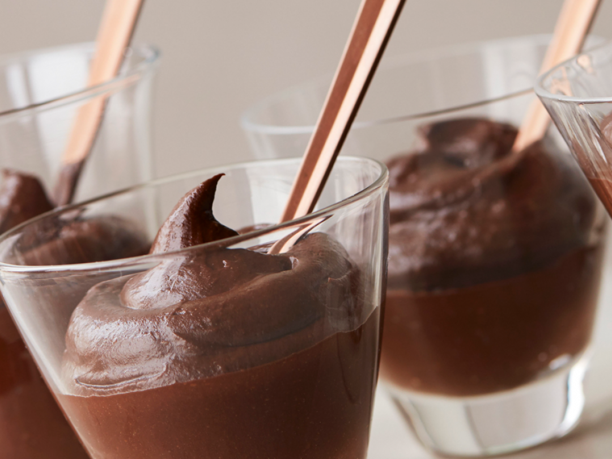

Avocado and cacao mousse

Description
Avocado's rich, buttery texture makes it a perfect base for mousses. This super simple spin on chocolate mousse blends it with a deep dark dash of cocoa powder, a drizzle of honey (or agave to make it vegan) and even a pinch of spice if you like.
Ingredients
- 1 ripe avocado
- 2-3 tbsp raw cacao powder
- 1 tbsp honey or agave syrup
- 1 tbsp cold water
- Cinnamon or vanilla beans (optional)
Method
- Scoop the avocado flesh into a blender. Add 2 tbsp cocoa and honey/agave and 1tbsp of the water. Blitz till smooth.
- Taste and add more cocoa, honey or water if needed. Add a pinch of cinnamon or a scrape of vanilla if you like, then serve.
- Serve with ripe pears or berries.